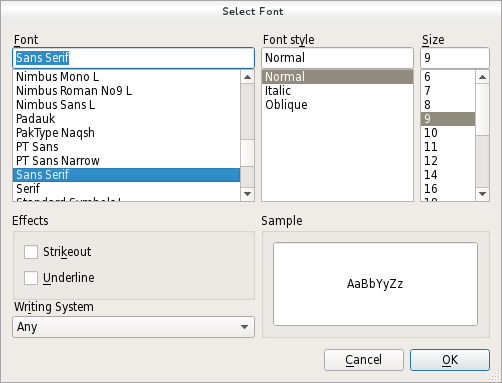

QFontDialog Class
The QFontDialog class provides a dialog widget for selecting a font. More...
| Header: | #include <QFontDialog> |
| qmake: | QT += widgets |
| Inherits: | QDialog |
Public Types
| enum | FontDialogOption { NoButtons, DontUseNativeDialog, ScalableFonts, NonScalableFonts, MonospacedFonts, ProportionalFonts } |
| flags | FontDialogOptions |
Properties
- currentFont : QFont
- options : FontDialogOptions
Public Functions
| QFontDialog(const QFont &initial, QWidget *parent = nullptr) | |
| QFontDialog(QWidget *parent = nullptr) | |
| QFont | currentFont() const |
| void | open(QObject *receiver, const char *member) |
| QFontDialog::FontDialogOptions | options() const |
| QFont | selectedFont() const |
| void | setCurrentFont(const QFont &font) |
| void | setOption(QFontDialog::FontDialogOption option, bool on = true) |
| void | setOptions(QFontDialog::FontDialogOptions options) |
| bool | testOption(QFontDialog::FontDialogOption option) const |
Reimplemented Public Functions
| virtual void | setVisible(bool visible) override |
Signals
| void | currentFontChanged(const QFont &font) |
| void | fontSelected(const QFont &font) |
Static Public Members
| QFont | getFont(bool *ok, const QFont &initial, QWidget *parent = nullptr, const QString &title = QString(), QFontDialog::FontDialogOptions options = FontDialogOptions()) |
| QFont | getFont(bool *ok, QWidget *parent = nullptr) |
Reimplemented Protected Functions
| virtual void | changeEvent(QEvent *e) override |
| virtual void | done(int result) override |
Detailed Description
A font dialog is created through one of the static getFont() functions.
Examples:
bool ok; QFont font = QFontDialog::getFont( &ok, QFont("Helvetica [Cronyx]", 10), this); if (ok) { // the user clicked OK and font is set to the font the user selected } else { // the user canceled the dialog; font is set to the initial // value, in this case Helvetica [Cronyx], 10 }
The dialog can also be used to set a widget's font directly:
myWidget.setFont(QFontDialog::getFont(0, myWidget.font()));
If the user clicks OK the font they chose will be used for myWidget, and if they click Cancel the original font is used.

See also QFont, QFontInfo, QFontMetrics, QColorDialog, QFileDialog, and Standard Dialogs Example.
Member Type Documentation
enum QFontDialog::FontDialogOption
flags QFontDialog::FontDialogOptions
This enum specifies various options that affect the look and feel of a font dialog.
For instance, it allows to specify which type of font should be displayed. If none are specified all fonts available will be listed.
Note that the font filtering options might not be supported on some platforms (e.g. Mac). They are always supported by the non native dialog (used on Windows or Linux).
| Constant | Value | Description |
|---|---|---|
QFontDialog::NoButtons | 0x00000001 | Don't display OK and Cancel buttons. (Useful for "live dialogs".) |
QFontDialog::DontUseNativeDialog | 0x00000002 | Use Qt's standard font dialog on the Mac instead of Apple's native font panel. |
QFontDialog::ScalableFonts | 0x00000004 | Show scalable fonts |
QFontDialog::NonScalableFonts | 0x00000008 | Show non scalable fonts |
QFontDialog::MonospacedFonts | 0x00000010 | Show monospaced fonts |
QFontDialog::ProportionalFonts | 0x00000020 | Show proportional fonts |
This enum was introduced or modified in Qt 4.5.
The FontDialogOptions type is a typedef for QFlags<FontDialogOption>. It stores an OR combination of FontDialogOption values.
See also options, setOption(), and testOption().
Property Documentation
currentFont : QFont
This property holds the current font of the dialog.
This property was introduced in Qt 4.5.
Access functions:
| QFont | currentFont() const |
| void | setCurrentFont(const QFont &font) |
Notifier signal:
| void | currentFontChanged(const QFont &font) |
options : FontDialogOptions
This property holds the various options that affect the look and feel of the dialog
By default, all options are disabled.
Options should be set before showing the dialog. Setting them while the dialog is visible is not guaranteed to have an immediate effect on the dialog (depending on the option and on the platform).
This property was introduced in Qt 4.5.
Access functions:
| QFontDialog::FontDialogOptions | options() const |
| void | setOptions(QFontDialog::FontDialogOptions options) |
See also setOption() and testOption().
Member Function Documentation
QFontDialog::QFontDialog(const QFont &initial, QWidget *parent = nullptr)
Constructs a standard font dialog with the given parent and specified initial font.
This function was introduced in Qt 4.5.
QFontDialog::QFontDialog(QWidget *parent = nullptr)
Constructs a standard font dialog.
Use setCurrentFont() to set the initial font attributes.
The parent parameter is passed to the QDialog constructor.
This function was introduced in Qt 4.5.
See also getFont().
[signal] void QFontDialog::currentFontChanged(const QFont &font)
This signal is emitted when the current font is changed. The new font is specified in font.
The signal is emitted while a user is selecting a font. Ultimately, the chosen font may differ from the font currently selected.
This function was introduced in Qt 4.5.
Note: Notifier signal for property currentFont.
See also currentFont, fontSelected(), and selectedFont().
[signal] void QFontDialog::fontSelected(const QFont &font)
This signal is emitted when a font has been selected. The selected font is specified in font.
The signal is only emitted when a user has chosen the final font to be used. It is not emitted while the user is changing the current font in the font dialog.
This function was introduced in Qt 4.5.
See also selectedFont(), currentFontChanged(), and currentFont.
[override virtual protected] void QFontDialog::changeEvent(QEvent *e)
Reimplements: QWidget::changeEvent(QEvent *event).
QFont QFontDialog::currentFont() const
Returns the current font.
This function was introduced in Qt 4.5.
Note: Getter function for property currentFont.
See also setCurrentFont() and selectedFont().
[override virtual protected] void QFontDialog::done(int result)
Reimplements: QDialog::done(int r).
Closes the dialog and sets its result code to result. If this dialog is shown with exec(), done() causes the local event loop to finish, and exec() to return result.
See also QDialog::done().
[static] QFont QFontDialog::getFont(bool *ok, const QFont &initial, QWidget *parent = nullptr, const QString &title = QString(), QFontDialog::FontDialogOptions options = FontDialogOptions())
Executes a modal font dialog and returns a font.
If the user clicks OK, the selected font is returned. If the user clicks Cancel, the initial font is returned.
The dialog is constructed with the given parent and the options specified in options. title is shown as the window title of the dialog and initial is the initially selected font. If the ok parameter is not-null, the value it refers to is set to true if the user clicks OK, and set to false if the user clicks Cancel.
Examples:
bool ok; QFont font = QFontDialog::getFont(&ok, QFont("Times", 12), this); if (ok) { // font is set to the font the user selected } else { // the user canceled the dialog; font is set to the initial // value, in this case Times, 12. }
The dialog can also be used to set a widget's font directly:
myWidget.setFont(QFontDialog::getFont(0, myWidget.font()));
In this example, if the user clicks OK the font they chose will be used, and if they click Cancel the original font is used.
Warning: Do not delete parent during the execution of the dialog. If you want to do this, you should create the dialog yourself using one of the QFontDialog constructors.
[static] QFont QFontDialog::getFont(bool *ok, QWidget *parent = nullptr)
This is an overloaded function.
Executes a modal font dialog and returns a font.
If the user clicks OK, the selected font is returned. If the user clicks Cancel, the Qt default font is returned.
The dialog is constructed with the given parent. If the ok parameter is not-null, the value it refers to is set to true if the user clicks OK, and false if the user clicks Cancel.
Example:
bool ok; QFont font = QFontDialog::getFont(&ok, this); if (ok) { // font is set to the font the user selected } else { // the user canceled the dialog; font is set to the default // application font, QApplication::font() }
Warning: Do not delete parent during the execution of the dialog. If you want to do this, you should create the dialog yourself using one of the QFontDialog constructors.
void QFontDialog::open(QObject *receiver, const char *member)
Opens the dialog and connects its fontSelected() signal to the slot specified by receiver and member.
The signal will be disconnected from the slot when the dialog is closed.
This function was introduced in Qt 4.5.
QFont QFontDialog::selectedFont() const
Returns the font that the user selected by clicking the OK or equivalent button.
Note: This font is not always the same as the font held by the currentFont property since the user can choose different fonts before finally selecting the one to use.
void QFontDialog::setCurrentFont(const QFont &font)
Sets the font highlighted in the QFontDialog to the given font.
This function was introduced in Qt 4.5.
Note: Setter function for property currentFont.
See also currentFont() and selectedFont().
void QFontDialog::setOption(QFontDialog::FontDialogOption option, bool on = true)
Sets the given option to be enabled if on is true; otherwise, clears the given option.
See also options and testOption().
[override virtual] void QFontDialog::setVisible(bool visible)
Reimplements: QDialog::setVisible(bool visible).
bool QFontDialog::testOption(QFontDialog::FontDialogOption option) const
Returns true if the given option is enabled; otherwise, returns false.